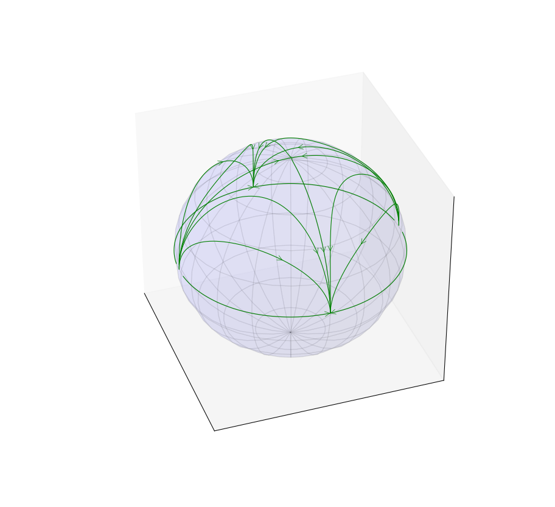

The Poincaré sphere can be used to study the behavior at infinity of some dynamical systems [Perko (2001)]. The projection equations defining the coordinates \((x,~y)\) of a generic point of the plane, in terms of the coordinates \((X,~Y,~Z)\) of a corresponding point on the sphere, read:
\begin{equation*}
\begin{cases}
x = \dfrac{X}{Z}\\
y = \dfrac{Y}{Z}
\end{cases}.
\end{equation*}
The inverse transformation is given by:
\begin{equation*}
\begin{cases}
X = \dfrac{x}{1+x^2+y^2}\\
Y = \dfrac{y}{1+x^2+y^2}\\
Z = \dfrac{1}{1+x^2+y^2}
\end{cases}.
\end{equation*}
The following figure shows a phase portrait on the Poincaré sphere of the system:
\begin{equation*}
\begin{cases}
\dot{x} = x \\
\dot{y} = -y
\end{cases},
\end{equation*}
exhibiting attractive nodes at infinity.

A phase portrait on the Poincaré sphere
#!/usr/bin/env python3
"""
A program to visualize the orbits of a dynamical system of the Poincaré sphere
"""
# Scientific libraries
from matplotlib import pyplot as plt
import numpy as np
from scipy.integrate import odeint
from mpl_toolkits.mplot3d import Axes3D
from matplotlib.patches import FancyArrowPatch
from mpl_toolkits.mplot3d import proj3d
# 3d arrow
class Arrow3D(FancyArrowPatch):
def __init__(self, xs, ys, zs, *args, **kwargs):
FancyArrowPatch.__init__(self, (0,0), (0,0), *args, **kwargs)
self._verts3d = xs, ys, zs
def draw(self, renderer):
xs3d, ys3d, zs3d = self._verts3d
xs, ys, zs = proj3d.proj_transform(xs3d, ys3d, zs3d, renderer.M)
self.set_positions((xs[0],ys[0]),(xs[1],ys[1]))
FancyArrowPatch.draw(self, renderer)
# Sphere
u = np.linspace(0, 2 * np.pi, 39)
v = np.linspace(0, np.pi, 21)
x1 = np.outer(np.cos(u), np.sin(v))
y1 = np.outer(np.sin(u), np.sin(v))
z1 = np.outer(np.ones(np.size(u)), np.cos(v))
# System
def system(X, t):
x, y = X
""" Hopf bifurcation
alpha = 1
dx = alpha*x - y - x*(x**2+y**2)
dy = x + alpha*y - y*(x**2+y**2)
"""
dx = x
dy = -y
return [dx, dy]
# Figure
fig = plt.figure(figsize=(9,9))
ax = fig.gca(projection = '3d')
plt.setp(ax.get_xticklabels(), visible=False)
plt.setp(ax.get_xticklines(), visible=False)
plt.setp(ax.get_xgridlines(), visible=False)
plt.setp(ax.get_yticklabels(), visible=False)
plt.setp(ax.get_yticklines(),visible=False)
plt.setp(ax.get_zticklabels(), visible=False)
plt.setp(ax.get_zticklines(),visible=False)
ax.set_xticklabels([])
ax.set_yticklabels([])
ax.set_zticklabels([])
ax.grid(False)
# Numerical integration
time = np.arange(0, 100, 0.01)
IV = [[100, 1000],
[100, -1000],
[-100, 1000],
[-100, -1000],
[0.01, 0.01],
[-0.01, 0.01],
[0, 15],
[0, -15],
[0.01, 15],
[0.01, -15],
[-0.01, 15],
[-0.01, -15],
[0.01, 100],
[0.01, -100],
[-0.01, 100],
[-0.01, -100]
]
for k in range(len(IV)):
orbit = odeint(system, IV[k], time)
x, y = orbit.T
# Projection on the Poincaré sphere
X = x/np.sqrt(1+x**2+y**2)
Y = y/np.sqrt(1+x**2+y**2)
Z = 1/np.sqrt(1+x**2+y**2)
ax.plot3D(X, Y, Z, color = 'g', linewidth=0.8)
a = Arrow3D([X[500],X[502]],[Y[500],Y[502]],[Z[500],Z[502]], mutation_scale=20, lw=0.5, arrowstyle="->", color="g")
ax.add_artist(a)
ax.plot_surface(x1, y1, z1, rstride=2, cstride=2, color='b', alpha=0.05, shade=1)
plt.show()
Bibliography
L. Perko. Differential equations and dynamical systems. Springer, New York, 3rd edition, 2001. ↩